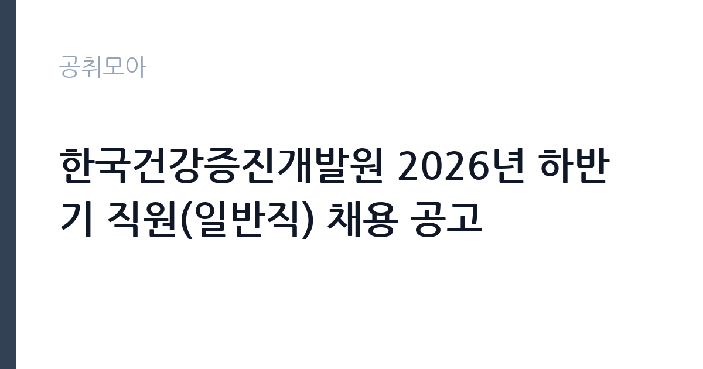

[공공기관] 한국건강증진개발원 2026년 하반기 직원(일반직) 채용 공고
한국건강증진개발원 · 서울 · 마감 2026-11-02 (D-14) · 출처 나라일터

한눈에 보는 모집 조건
| 기관 | 한국건강증진개발원 |
|---|---|
| 공고명 | 한국건강증진개발원 2026년 하반기 직원(일반직) 채용 공고 |
| 고용형태 | 정규직 |
| 근무지 | 서울 |
| 게시일 | 2026-10-19 |
| 마감일 | 2026-11-02 (D-14) |
지원자격, 이렇게 읽으세요
- 일반직 5급 7명
- 접수 ~2026-11-02 마감
- 세부 조건은 원문 공고문 확인
응시자격은 두 분야로 나뉩니다. 건강증진사업일반 6명과 전산·개인정보보호 1명입니다. 분야별 세부 요건은 공고문에 따로 적혀 있으므로, 본인이 어느 분야에 해당하는지 먼저 확정해야 합니다. 공통적으로는 임용일부터 정년까지 근무하는 정규직 일반직 5급이므로, 학력과 경력 요건을 분야별 기준에 맞춰 증명해야 합니다. 전산·개인정보보호 분야는 이름 그대로 정보보호 업무를 전제로 하므로 관련 자격이나 실무 경험이 중요합니다. 건강증진사업일반은 보건·복지·정책 관련 전공과 실무가 폭넓게 인정되는 대신, 지원자가 몰리는 분야입니다. 원문 공고문의 분야별 자격표를 먼저 대조하고, 애매한 항목은 채용콜센터에 직접 문의하십시오.
이 공고의 포인트
이 공고의 핵심은 세 가지입니다. 첫째, 7명이라는 규모입니다. 공공기관 신입·경력 채용에서 한 번에 7명을 뽑는 경우는 흔하지 않아, 서류 통과 가능성이 상대적으로 높습니다. 둘째, 정규직 일반직 5급이라는 점입니다. 임용일부터 정년까지 근무하는 조건이 공고문에 명시돼 있습니다. 셋째, 전형이 서류·필기·면접·결격조회 4단계로 명확합니다. 필기가 있는 공고는 준비 부담이 크지만,반대로 스펙보다 시험 점수로 승부할 수 있다는 뜻이기도 합니다. 국민건강증진기금을 다루는 기관인 만큼 정책 사업의 실무를 배우고 싶은 지원자에게 적합합니다.
전형은 어떻게 진행되나
선발은 4단계입니다. 1차 서류, 2차 필기, 3차 면접, 4차 결격여부 조회 순입니다. 서류에서는 분야별 응시자격과 자기소개서를 보고, 필기에서는 직무 관련 지식과 일반 상식을 평가합니다. 면접은 직무 적합성과 조직 적응력을 확인하고, 마지막으로 결격사유를 조회합니다. 공고문에는 접수 시작일이 10월 2일로 적혀 있으나 이는 오기로 보이며, 실제 접수는 공고 게시 이후 지원 사이트에서 이뤄집니다. 접수는 khepi-hr.jobnlab.co.kr에서 온라인으로 진행됩니다. 필기 일정이 서류 합격 발표 후 빠르게 잡히므로, 서류를 낸 직후부터 필기 준비를 시작하는 편이 안전합니다.
원문에서 확인한 전형 방식
한국건강증진개발원 2026년 하반기 직원(일반직) 채용 공고 「한국건강증진개발원」은 국민의 건강증진에 이바지하기 위하여 효율적이고 체계적인 정책개발 및 지원 사업을 수행하는 기관으로. 함께 근무할 유능한 인재를 채용하고자 하오니 많은 관심과 응모 바랍니다. 1. 채용분야 : 총 7명(2개분야) * 모집분야 및 분야별 세부사항은 공고문 참조 ○ 건강증진사업일반(일반직 5급) : 6명 ○ 전산·개인정보보호(일반직 5급) : 1명 2. 근로기간 : 임용일 ~ 정년(정규직(일반직)) 3. 근무 예정지 : 한국건강증진개발원(서울 광진구 소재, 보건복지행정타운) 4. 채용공고 기간 : 2026. 10. 19.(월) ~ 2026. 11. 2.(월), 17:00까지/15일간 5. 입사지원서 접수는 2026. 10. 2.(목)부터이며, 마감일은 공고마감일과 동일 * 지원서 접수 사이트 : https://khepi-hr.jobnlab.co.kr/ 6. 선발방법 : (1차) 서류 → (2차) 필기 → (3차) 면접 → (4차) 결격여부조회 7. 담당부서(연락처) : 채용콜센터(070-4276-4177) / 홈페이지 문의하기 게시판 이용 * 기타 세부사항은 공고문을 참조바랍니다.
이런 분께 추천해요
- 보건·복지·정책 분야 정규직을 노리는 분 — 건강증진사업일반 6명을 뽑습니다
- 정보보호·전산 자격이나 실무 경험이 있는 분 — 별도 1명 트랙이 있습니다
- 서울 광진구 보건복지행정타운으로 출퇴근이 가능한 분
지원 전 체크리스트
- 지원 분야(건강증진사업일반 또는 전산·개인정보보호)를 확정했는가
- 분야별 응시자격표와 내 학력·경력을 1대1로 대조했는가
- 필기 준비를 서류 제출과 동시에 시작했는가 — 전형 간격이 짧습니다
- 마감일 2026-11-02 17시 이전에 접수증을 확보했는가
모집 일정과 제출 타이밍
마감은 2026년 11월 2일 오후 5시입니다. 공고 기간이 10월 19일부터 15일간으로 넉넉하지만, 필기 전형이 붙어 있어 실질 준비 기간은 짧습니다. 권장 일정은 첫 주에 자기소개서를 완성하고, 둘째 주에 필기 기출 유형을 풀며, 마감 사흘 전에 접수하는 것입니다. 서류 합격 후 필기까지 보통 1~2주가 주어지므로, 서류 제출 시점에 이미 필기 기본기를 갖춰두는 것이 유리합니다. 최종 단계에는 결격여부 조회가 있으니, 신원 관련 사안이 있다면 미리 확인하십시오.
직무 이해하기: 공공기관
한국건강증진개발원은 국민건강증진법에 따라 설립된 공공기관으로, 국민건강증진기금을 운영하며 건강증진 정책을 개발하고 지원합니다. 건강증진사업일반 5급은 금연, 절주, 신체활동, 영양, 구강건강 같은 사업 영역 중 한 곳에 배치되어 사업 기획과 운영을 맡습니다. 구체적으로는 정책 연구 과제 수행, 사업 지침 마련, 지방자치단체와의 협력 사업 관리, 성과 지표 설계, 예산 집행 관리 등이 핵심입니다. 전산·개인정보보호 분야는 기관의 정보시스템 운영과 개인정보 보호 체계 관리, 정보보안 점검을 맡습니다. 두 분야 모두 문서와 데이터를 다루는 비중이 높고, 보건복지부와 호흡을 맞추는 일이 많습니다.
자기소개서 작성 팁
자기소개서는 정책 이해와 실무 역량을 함께 보여줘야 합니다. 첫 문단에는 지원 분야를 명확히 밝히고, 그 분야에서 내가 해결하고 싶은 문제를 한 문장으로 제시하십시오. 본론은 경험 두 개로 구성합니다. 하나는 사업 기획이나 운영 경험, 다른 하나는 데이터나 예산을 다뤄본 경험입니다. 건강증진 분야라면 특정 사업의 성과를 수치로 제시하면 설득력이 높습니다. 전산 분야라면 정보보호 체계를 점검하거나 개인정보 처리 절차를 정비한 경험이 좋습니다. 마무리에는 입사 후 맡고 싶은 업무를 구체적으로 적으십시오. 필기 전형이 있는 기관이므로 자기소개서는 과장보다 정확성과 일관성에 집중하는 편이 낫습니다.
면접 준비 포인트
면접은 직무 면접과 인성 면접이 결합된 형태가 일반적입니다. 직무 면접에서는 건강증진 사업의 현안을 묻습니다. 예를 들어 청소년 흡연율을 낮추기 위한 사업을 설계해보라는 질문이 나올 수 있습니다. 이때는 대상, 수단, 지표, 예산을 순서대로 답하면 됩니다. 인성 면접에서는 갈등 해결과 조직 적응을 봅니다. 공공기관 특유의 다부처 협업 상황을 예로 들면 좋습니다. 답변은 결론부터 말하고 근거를 붙이는 방식으로 연습하십시오. 지원 분야의 최근 정책 이슈 하나를 정리해 가면 대화가 자연스럽게 이어집니다.
급여·근무조건 읽는 법
보수는 기관 내부 규정에 따르며, 개인별 경력에 따라 달라진다고 공고문에 명시돼 있습니다. 공공기관 경영공시인 알리오에서 관련 규정을 확인할 수 있습니다. 참고 수치를 보면, 사람인이 국민연금 데이터를 기반으로 집계한 2024년 평균 연봉은 6,346만원이고, 과거 알리오 공시를 인용한 자료에서는 신입 초봉 3,490만원, 직원 평균 4,814만원이 확인됩니다. 이 수치들은 시점과 집계 방식이 달라 그대로 비교하기는 어렵습니다. 일반직 5급 신입이라면 초임 연봉에 기본급과 수당이 포함되고, 성과급은 기관 평가와 개인 평가에 따라 별도 지급됩니다. 정규직이므로 4대 보험과 퇴직급여가 적용되고 정년이 보장됩니다. 정확한 금액은 원문 공고문과 알리오 공시를 함께 확인하십시오.
자주 묻는 질문
- 몇 명을 뽑나요?
총 7명입니다. 건강증진사업일반 6명, 전산·개인정보보호 1명으로 나눠 선발합니다. - 필기전형이 있나요?
네. 서류, 필기, 면접, 결격여부 조회 순으로 4단계입니다. 필기 일정이 촉박하므로 서류 제출과 동시에 준비하시는 것이 좋습니다. - 초봉은 얼마인가요?
공고문에는 내부규정에 따르며 경력에 따라 다르다고만 적혀 있습니다. 과거 알리오 공시 기준 신입 초봉 3,490만원 수준의 사례가 있으니 원문과 공시를 확인하십시오.
함께 보면 좋은 공고
[공공기관] 2026년 하반기 중소벤처기업진흥공단 체험형 청년인턴(일반) 채용 공고 — 마감 2026-11-03[공공기관] 2026년 제3차 동남권원자력의학원 직원채용 공고 — 마감 2026-11-02[공공기관] 2026년 한국잡월드 정규직 신입(5급) 직원 채용 공고 — 마감 2026-11-04출처: 나라일터 공개정보를 바탕으로 공취모아가 정리한 안내글입니다. 모집 조건·일정은 변경될 수 있으니 지원 전 반드시 원문 공고문을 확인하세요. 본 글은 정보 제공용이며 합격을 보장하지 않습니다.